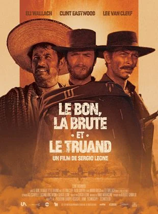

Fung était une légende vivante du football, jusqu'à ce qu'il fasse perdre le championnat à son équipe.
Fous de rage, les fans ne le lui ont pas pardonné.
Aujourd'hui, Fung s'occupe du matériel de la Team Evil, l'équipe de son ancien partenaire,
Hung. Lorsque Fung est renvoyé, il se tourne vers Sing, un moine du célèbre temple
Shaolin qui possède des dons extraordinaires en matière d'arts martiaux.
Lorsque Fung voit Sing mettre en déroute une bande de voyous avec un simple ballon de
football, il a l'ingénieuse idée de créer une équipe de foot Shaolin pour vaincre ses
adversaires...
Stephen Chow,
Wei Zhao,
Wong Yat Fei
Un soir, suspendus au 52ème étage de la Tour Montparnasse, Eric et Ramzy, deux laveurs
de carreaux, ont pris du retard dans leur travail.Pendant ce temps, la jolie Stéphanie attend
son oncle, le puissant PDG du Groupe Lanceval, et ses fils, les actionnaires principaux,
pour un conseil d'administration nocturne qui va se révéler bien mouvementé. En effet, un
commando surentraîné investit l'immeuble, contrôle tous les accès et prend la famille
Lanceval en otage. Stéphanie est en fait l'organisatrice du coup monté et convoite la fortune
de son oncle qui la méprise depuis toujours. Stéphanie et ses hommes n'attendent plus que
la main de la chère mère, dont les empreintes vont permettre d'actionner le mécanisme
d'ouverture du coffre.Cependant, nos deux compères sont restés au sommet de la Tour et
risquent bien de faire capoter le plan machiavélique de la belle.
Eric Judor,
Ramzy Bedia,
Marina Foïs

A Detroit, en 1995, Jimmy Smith Jr. a des rêves plein la tête, mais il lui manque encore les
mots pour les exprimer. Sa vie d'adolescent se déroule entre banlieue blanche et quartiers
noirs, le long de cette ligne de démarcation que l'on nomme 8 Mile Road. En dépit de tous
ses efforts, Jimmy n'a jamais franchi cette barrière symbolique et continue d'accumuler les
déboires familiaux, professionnels et sentimentaux.
Un jour, il participe à un clash - une joute oratoire de rappeurs - où il doit faire face à Papa
Doc, le chef de la bande des " Leaders du Monde Libre ". Paralysé par le trac, il reste muet
et doit quitter la scène sous les huées de la foule. Cette nouvelle humiliation l'oblige à un
salutaire examen de conscience. Quelques jours plus tard, Jimmy se retrouve forcé de
tenter un come-back...
Eminem,
Kim Basinger,
Mekhi Phifer

Pendant la Guerre de Sécession, trois hommes, préférant s'intéresser à leur profit
personnel, se lancent à la recherche d'un coffre contenant 200 000 dollars en pièces d'or
volés à l'armée sudiste. Tuco sait que le trésor se trouve dans un cimetière, tandis que Joe
connaît le nom inscrit sur la pierre tombale qui sert de cache. Chacun a besoin de l'autre.
Mais un troisième homme entre dans la course : Setenza, une brute qui n'hésite pas à
massacrer femmes et enfants pour parvenir à ses fins.
Clint Eastwood,
Eli Wallach,
Lee Van Cleef

Pendant la Guerre de Sécession, trois hommes, préférant s'intéresser à leur profit
personnel, se lancent à la recherche d'un coffre contenant 200 000 dollars en pièces d'or
volés à l'armée sudiste. Tuco sait que le trésor se trouve dans un cimetière, tandis que Joe
connaît le nom inscrit sur la pierre tombale qui sert de cache. Chacun a besoin de l'autre.
Mais un troisième homme entre dans la course : Setenza, une brute qui n'hésite pas à
massacrer femmes et enfants pour parvenir à ses fins.
Clint Eastwood,
Eli Wallach,
Lee Van Cleef
Ecartelé entre son identité secrète de Spider-Man et sa vie d'étudiant, Peter Parker n'a pas
réussi à garder celle qu'il aime, Mary Jane, qui est aujourd'hui comédienne et fréquente
quelqu'un d'autre. Guidé par son seul sens du devoir, Peter vit désormais chacun de ses
pouvoirs à la fois comme un don et comme une malédiction.
Par ailleurs, l'amitié entre Peter et Harry Osborn est elle aussi menacée. Harry rêve plus
que jamais de se venger de Spider-Man, qu'il juge responsable de la mort de son père.
La vie de Peter se complique encore lorsque surgit un nouvel ennemi : le redoutable Dr Otto
Octavius. Cerné par les choix et les épreuves qui engagent aussi bien sa vie intime que
l'avenir du monde, Peter doit affronter son destin et faire appel à tous ses pouvoirs afin de
se battre sur tous les fronts...
Tobey Maguire,
Kirsten Dunst,
Alfred Molina